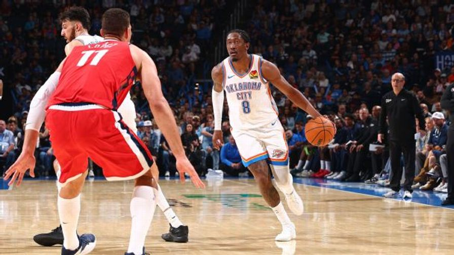

Jalen Williams, Cason Wallace injured: What's next for the OKC Thunder?
The Thunder will be without two starting guards for months. Could they make a trade to try to replace Jalen Williams and Cason Wallace?
Jalen Williams, Cason Wallace injured: What's next for the OKC Thunder?
The Oklahoma City Thunder lost two starters to long-term injuries in their 108-101 win over the LA Clippers on Sunday night.
General manager Sam Presti announced Monday that guard Jalen Williams will undergo surgery for a dislocated left ankle and fractured fibula, while guard Cason Wallace will undergo surgery for a torn labrum in his left shoulder. Both players are expected to miss several months.
Williams was placed on a stretcher and wheeled off the court after he was injured on a drive to the basket late in the fourth quarter. Wallace left the game in the first quarter and didn't return.
They're both big losses for the Thunder, who were counting on Williams to get back to his All-Star form from the 2024-25 season and Wallace to step into the starting lineup. Williams missed 49 regular-season games last season while recovering from surgery on his right wrist and then injuring both hamstrings. He played in just five games -- and 107 total minutes -- in the postseason as OKC was beaten by the San Antonio Spurs in seven games in the Western Conference finals. Wallace signed a five-year, $139 million contract extension just before the season began.